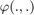
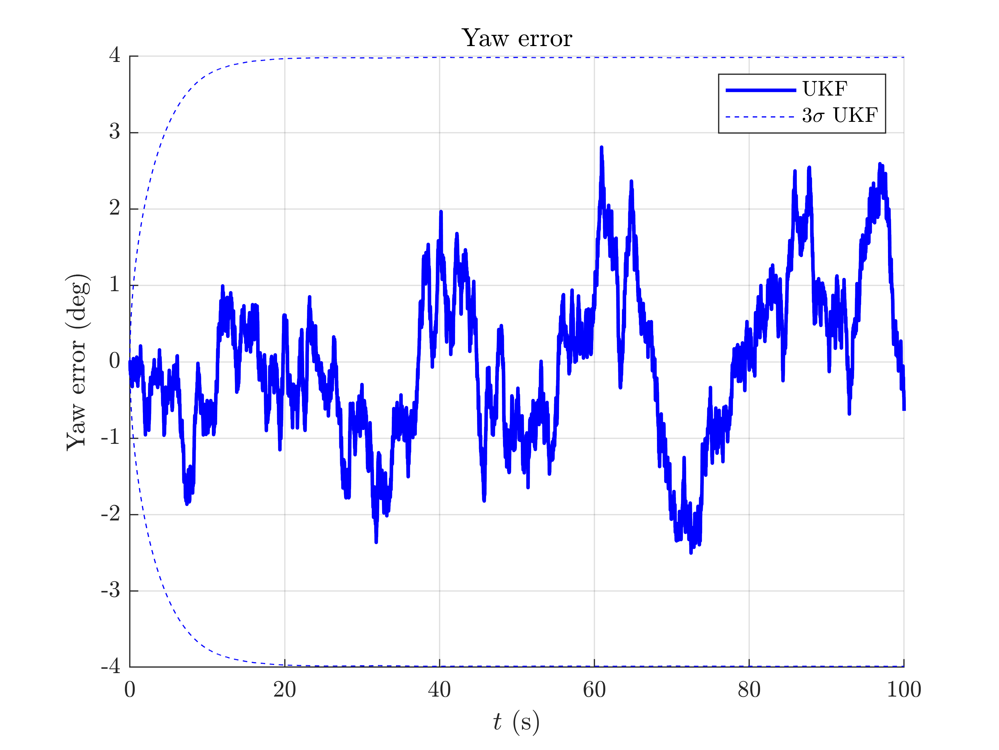
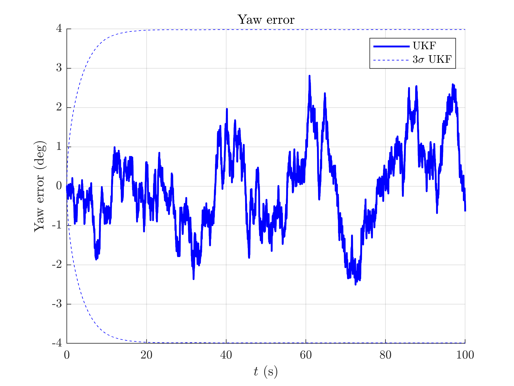

Attitude Estimation with an IMU - Example
Goals of this script
- applying the UKF for estimating 3D attitude from an IMU.
We assume the reader is already familiar with the tutorial.
Attitude estimation with an Inertial Measurement Unit (IMU). The filter fuses measurements comming from gyros, accelerometers and magnetometers. The IMU does not have any bias. We reproduce the simulation based on [KHSchon17].
Contents
Initialization
Start by cleaning the workspace.
clear all; close all;
Simulation
The true trajectory is computed along with noisy inputs after we define the noise standard deviation affecting the IMU, where the platform is 2 s stationary and then has constant angular velocity around gravity.
% sequence time (s) T = 100; % IMU frequency (Hz) imu_freq = 100; % IMU noise standard deviation (noise is isotropic) imu_noise_std = [5/180*pi; % gyro (rad/s) 0.4; % accelerometer (m/s^2) 0.2]; % magnetometer % total number of timestamps N = T*imu_freq; % integration step (s) dt = 1/imu_freq; % simulate true states and noisy inputs [states, omegas] = attitude_simu_f(T, imu_freq, imu_noise_std); % simulate accelerometer and magnetometer measurements ys = attitude_simu_h(states, T, imu_freq, imu_noise_std);
The state and the input contain the following variables:
states(n).Rot % 3d orientation (matrix) omegas(n).gyro % robot angular velocities
A measurement ys(:, k) contains accelerometer and magnetometer measurements.
Filter Design and Initialization
We embed the state in  with left multiplication, such that:
with left multiplication, such that:
- the retraction  is the exponential where the state multiplies the uncertainty on the left.
- the inverse retraction
 is the logarithm.
is the logarithm.
% propagation noise covariance matrix Q = imu_noise_std(1).^2*eye(3); % measurement noise covariance matrix R = blkdiag(imu_noise_std(2).^2*eye(3), imu_noise_std(3).^2*eye(3)); % initial uncertainty matrix P0 = zeros(3, 3); % The state is perfectly initialized % sigma point parameters alpha = [1e-3, 1e-3, 1e-3]; % asses UKF function f = @attitude_f; h = @attitude_h; phi = @attitude_phi; phi_inv = @attitude_phi_inv; weights = ukf_set_weight(length(P0), length(R), alpha); cholQ = chol(Q); % initialize with true state ukf_state = states(1); ukf_P = P0; % variables for recording estimates ukf_states = ukf_state; ukf_Ps = zeros(N, 3, 3); ukf_Ps(1, :, :) = ukf_P;
Filtering
The UKF proceeds as a standard Kalman filter with a for loop.
for n = 2:N % propagation [ukf_state, ukf_P] = ukf_propagation(ukf_state, ukf_P, omegas(n-1), ... f, dt, phi, phi_inv, cholQ, weights); % update [ukf_state, ukf_P] = ukf_update(ukf_state, ukf_P, ys(:, n), h, ... phi, R, weights); % save estimates ukf_states(n) = ukf_state; ukf_Ps(n, :, :) = ukf_P; end
Results
We plot the orientation as function of time and the orientation error.
attitude_results_plot(ukf_states, ukf_Ps, states, omegas, dt);


 
 The trajectory starts by a small stationary step following by constantly turning around the gravity vector (only the yaw is increasing).
We have ploted the 95% ( ) confident interval and see the error is mainly below behind this interval: in this situation the filter covariance output matches especially well the error behavior.
) confident interval and see the error is mainly below behind this interval: in this situation the filter covariance output matches especially well the error behavior.
Conclusion
This script shows how well works the UKF on parallelizable manifolds for estimating the orientation of a platform from an IMU.
You can now:
- address the UKF for the same problem with different noise parameters.
- add outliers in acceleration or magnetometer measurements.
- benchmark the UKF with different retractions and compare it to the extended Kalman filter in the Benchmarks section.